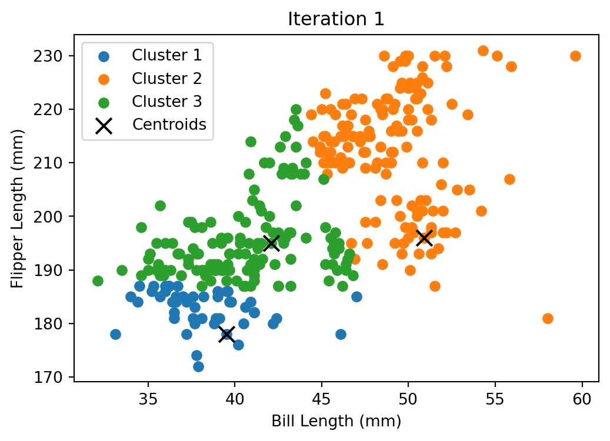
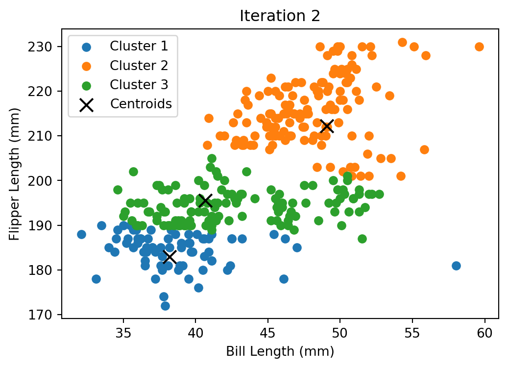
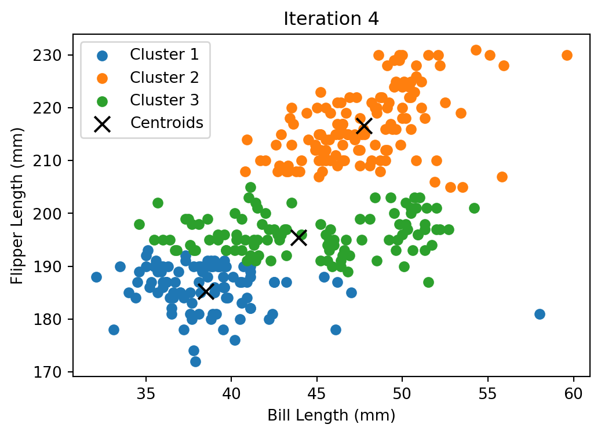
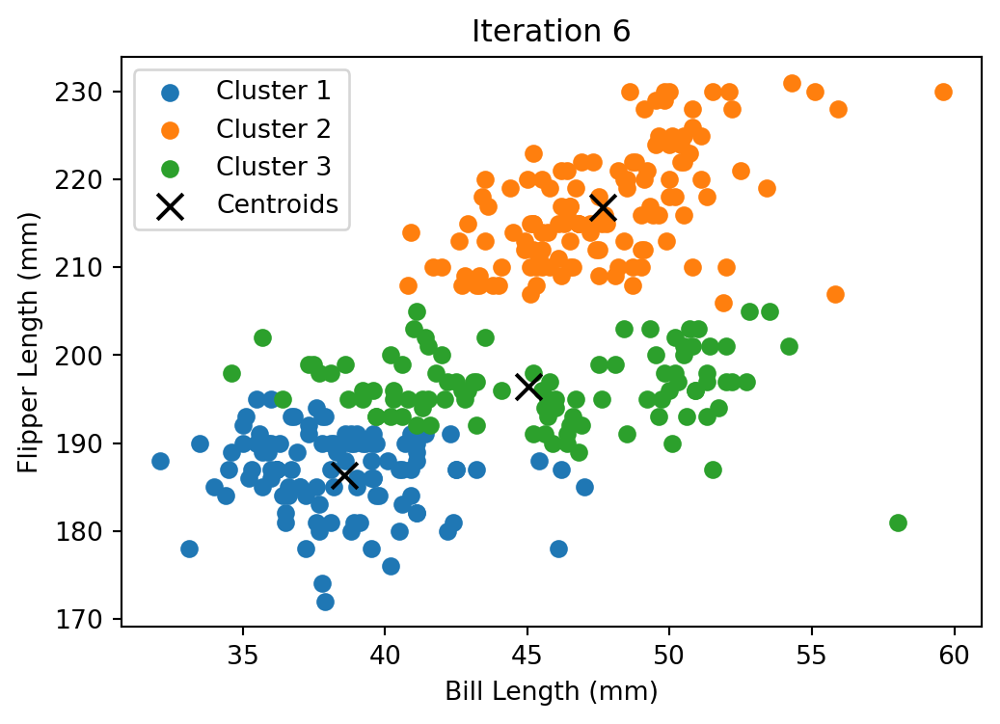
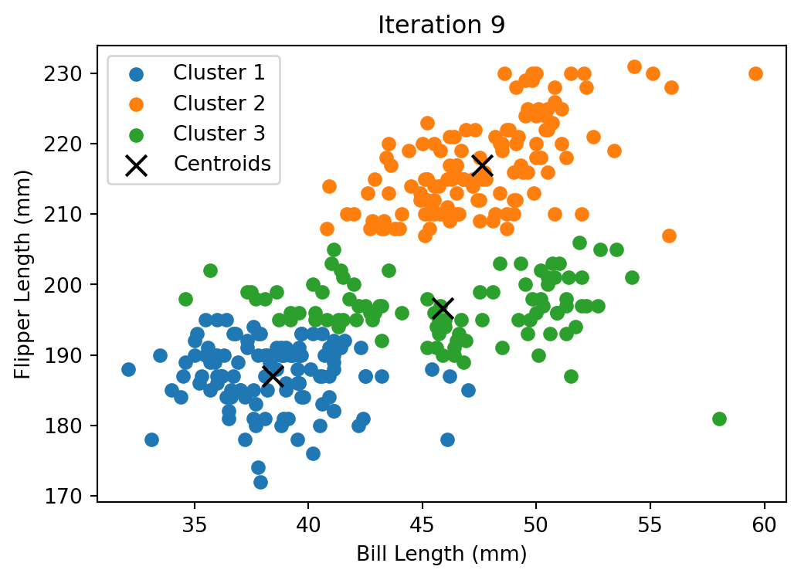
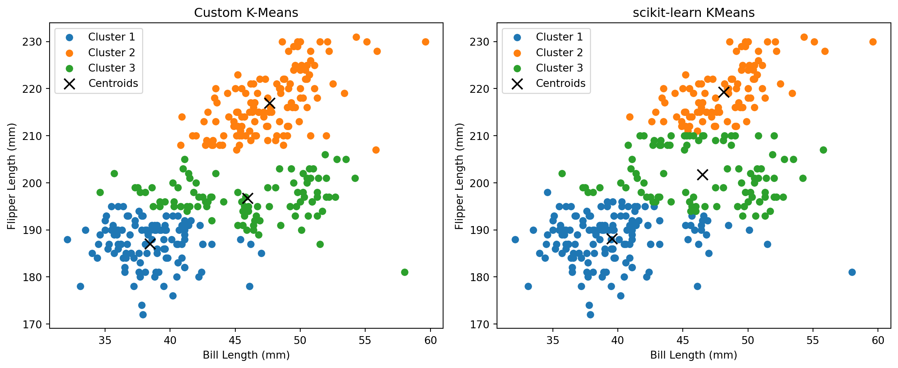

import numpy as np
import pandas as pd
import matplotlib.pyplot as plt
# Load data
df = pd.read_csv('palmer_penguins.csv')
data = df[['bill_length_mm', 'flipper_length_mm']].dropna().values
def initialize_centroids(X, k):
idx = np.random.choice(len(X), k, replace=False)
return X[idx]
def assign_clusters(X, centroids):
dists = np.linalg.norm(X[:, np.newaxis] - centroids, axis=2)
return np.argmin(dists, axis=1)
def update_centroids(X, labels, k):
return np.array([X[labels == i].mean(axis=0) for i in range(k)])
def kmeans(X, k, max_iters=10, plot_steps=True):
centroids = initialize_centroids(X, k)
for it in range(max_iters):
labels = assign_clusters(X, centroids)
new_centroids = update_centroids(X, labels, k)
if plot_steps:
plt.figure(figsize=(6,4))
for i in range(k):
plt.scatter(X[labels==i,0], X[labels==i,1], label=f'Cluster {i+1}')
plt.scatter(centroids[:,0], centroids[:,1], c='black', marker='x', s=100, label='Centroids')
plt.title(f'Iteration {it+1}')
plt.xlabel('Bill Length (mm)')
plt.ylabel('Flipper Length (mm)')
plt.legend()
plt.show()
if np.allclose(centroids, new_centroids):
break
centroids = new_centroids
return labels, centroids
# Run custom k-means
np.random.seed(42)
k = 3
labels, centroids = kmeans(data, k, max_iters=10, plot_steps=True)
# Compare with scikit-learn
from sklearn.cluster import KMeans
kmeans_builtin = KMeans(n_clusters=k, random_state=42)
labels_builtin = kmeans_builtin.fit_predict(data)
plt.figure(figsize=(12,5))
plt.subplot(1,2,1)
for i in range(k):
plt.scatter(data[labels==i,0], data[labels==i,1], label=f'Cluster {i+1}')
plt.scatter(centroids[:,0], centroids[:,1], c='black', marker='x', s=100, label='Centroids')
plt.title('Custom K-Means')
plt.xlabel('Bill Length (mm)')
plt.ylabel('Flipper Length (mm)')
plt.legend()
plt.subplot(1,2,2)
for i in range(k):
plt.scatter(data[labels_builtin==i,0], data[labels_builtin==i,1], label=f'Cluster {i+1}')
plt.scatter(kmeans_builtin.cluster_centers_[:,0], kmeans_builtin.cluster_centers_[:,1], c='black', marker='x', s=100, label='Centroids')
plt.title('scikit-learn KMeans')
plt.xlabel('Bill Length (mm)')
plt.ylabel('Flipper Length (mm)')
plt.legend()
plt.tight_layout()
plt.show()




